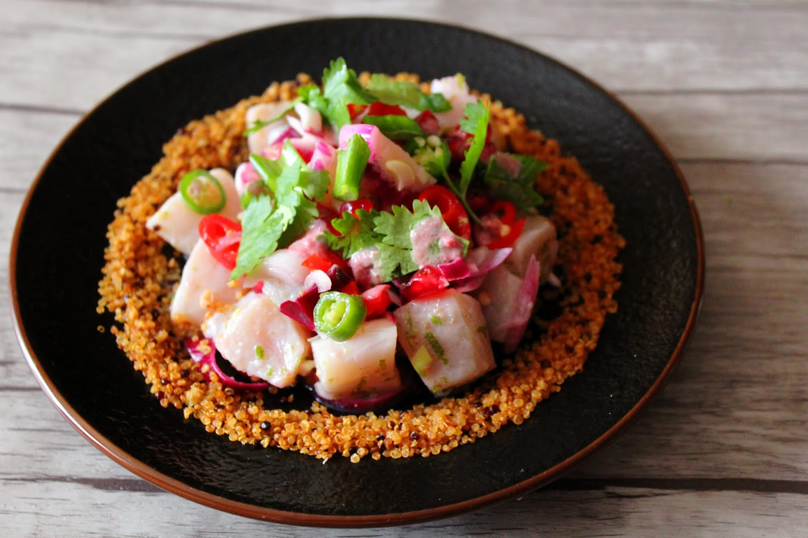
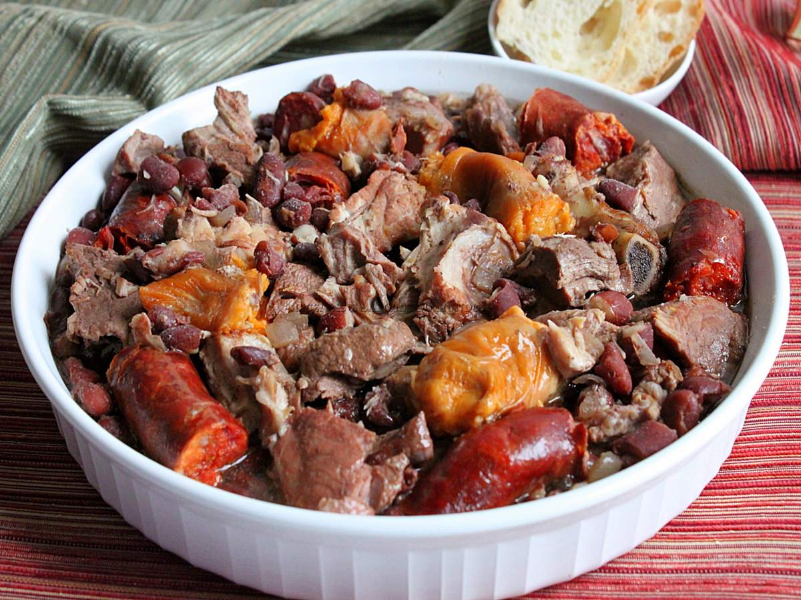
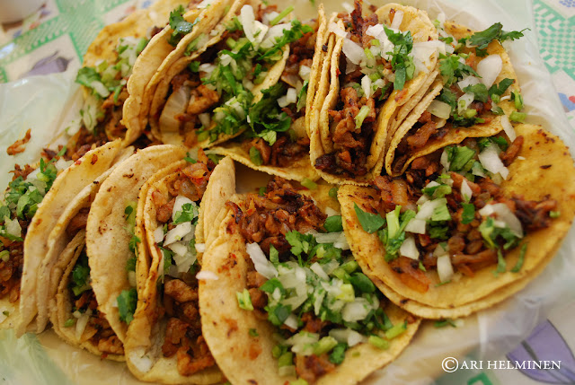
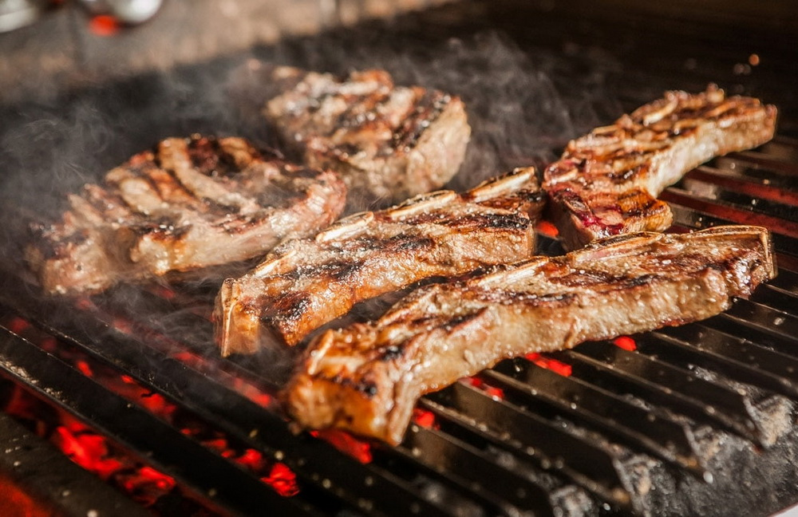

Platos más populares en América Latina
Publicado el
La cocina latinoamericana es un bordado diferente y divino de sabores, que se inspira en una rica mezcla de sociedades nativas, impactos europeos y prácticas africanas. Entre el montón de platos tentadores que llenan sin esfuerzo las mesas de los hogares y restaurantes latinoamericanos, algunos se destacan como notorios delegados de este enérgico legado culinario.
Uno de esos platos es el ceviche, un preciado manjar de pescado que proviene de los lugares costeros de América Latina. Normalmente se compone de pescado crudo nuevo o pescado marinado en jugo de lima o limón, que "cocina" el pescado a medida que se fija. Junto con guarniciones como cebollas, cilantro y pimientos para guiso de frijoles, el ceviche rebosa de sabores ardientes, agrios y picantes que son a la vez revitalizantes y fortificantes.
Las empanadas son otra perla culinaria latinoamericana. Estas sabrosas empanadas vienen en diferentes formas y tamaños, cargadas con una variedad de guarniciones, por ejemplo, hamburguesa molida, queso cheddar, verduras o incluso rellenos dulces como dulce de leche. Las empanadas cuentan con un exterior escamoso y de color terroso brillante que soporta los deliciosos rellenos, lo que las convierte en una abrumadora opción de comida y bocadillo para la carretera.
La feijoada, un buen guiso brasileño, es una demostración de la adoración de la nación por los banquetes alentadores y cocinados a fuego lento. Este plato destaca los frijoles oscuros guisados con una mezcla de cortes de cerdo como salchicha, tocino y costillas. Presentada con arroz, col rizada y cortes de naranja, la feijoada ofrece una agradable mezcla de superficies y sabores que son a la vez satisfactorios y profundamente relajantes.
En México, los tacos al ministro gobiernan. Estos deliciosos tacos de carretera se componen de carne de cerdo marinada delicadamente cortada cocinada en un asador hacia arriba, como el shawarma del centro del este. La delicada y sabrosa carne de cerdo generalmente se sirve en pequeñas tortillas de maíz y se decora con piña, cilantro y cebolla, haciendo un maravilloso equilibrio de dulce y exquisito con un toque de ahumado.
Por fin, ninguna investigación sobre la comida latinoamericana terminaría sin hacer referencia al asado argentino. Esta costumbre de parrilla más querida incluye asar a la parrilla diferentes cortes de hamburguesas, perritos calientes e incluso vísceras sobre un fuego abierto. El resultado es la fantasía de un carnívoro, con aportes de carne delicada, ahumada y deliciosa que a menudo se unen con salsa chimichurri, una mezcla ardiente de especias y sabores.
Fundamentalmente, los mejores platos latinoamericanos no son simplemente cenas; son encuentros culinarios que inspiran el rico bordado de la cultura latinoamericana, la historia y el alma entusiasta de sus parientes. Ya sea que aprecie la novedad ácida del ceviche, el apetitoso abrazo de las empanadas, la bondad de la feijoada, la explosión de sabores en los tacos al ministro o la impecable perfección ahumada del asado argentino, cada bocado es un estímulo para participar en el universo animado y diferente de la cocina latinoamericana.